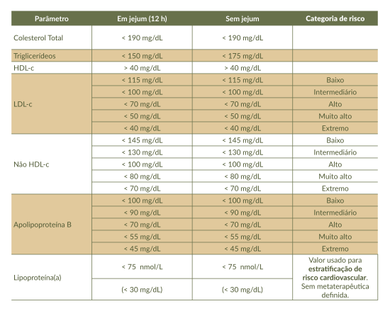

Os valores de referência e alvos terapêuticos para colesterol e triglicerídeos encontram-se na Tabela 2.
Tabela 2. Valores referenciais ou alvos terapêuticos do perfil lipídico, de apolipoproteína B e de lipoproteína(a)

Fonte: Diretriz Brasileira de Dislipidemias e Prevenção da Aterosclerose – 2025 (Rached et al., 2025).